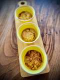
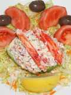
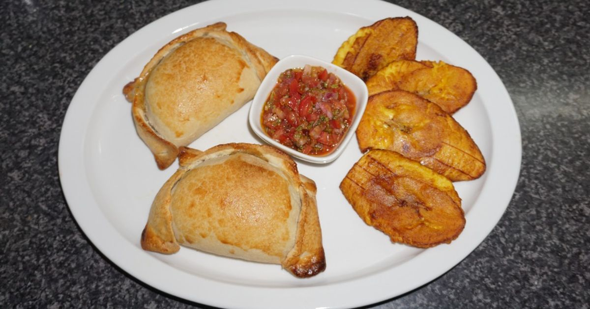
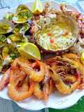
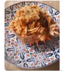

huevos cocidos · palitos de cangrejo · mejillones al natural escurridos · berberechos al natural escurridos · mayonesa · nata para cocinar · sal · cucharitas comestibles

Centollas cocidas · Cebollas medianas · Leche entera con calcio · Maicena · Sal · Pimienta negra · Nuez moscada · Aceite de oliva virgen extra · Pan rallado

carne de centolla cocida · cebolla morada · pimiento morrón · apio · cilantro · mayonesa · mostaza a la piedra

carne de centolla cocida · camarones · mantequilla · cebolla · queso · masa para empanadas

centolla viva · conchas finas · gambas · limones · ajos · perejil · vino blanco

Centollas · Spaghetti · Cebollas · ajo · Concentrado de tomate · Brandy · Estragón · Tomates cherry · Aceite de oliva

centollo fresco · ajo · perejil · aceite de oliva virgen extra · guindilla · sal marina

carne de centolla · langostinos · rúcula · tomate cherry · aguacate · vinagreta de cítricos · pipas de calabaza

caldo de pescado · carne de centolla · fideos · almejas · cebolla · puerro · zanahoria · azafrán · laurel

tortillas de maíz · carne de centolla · mango · cebolla morada · cilantro · chile jalapeño · lima · crema agria
Asistente virtual - ¿En qué puedo ayudarte?
Preguntas frecuentes: